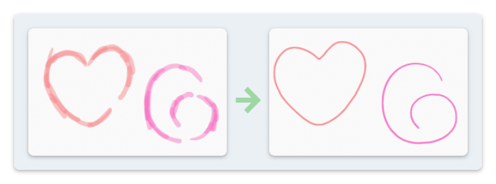
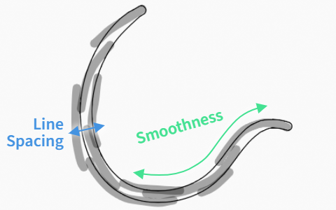
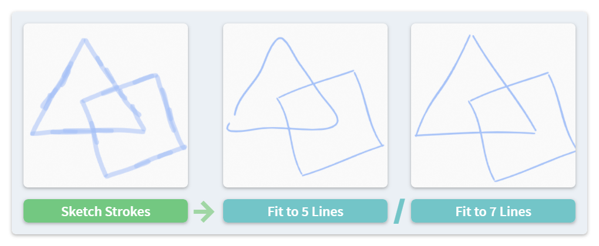
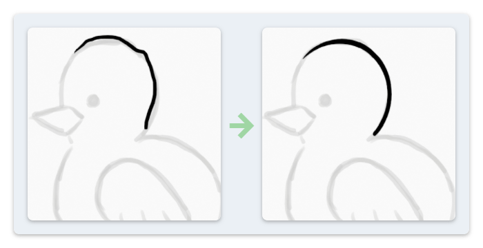

Sketch Cleanup #
NijiGPen’s line operators provide functionality that helps turn raw sketches into final line art. A raw sketch usually contains repeated strokes, line splits, and line gaps that require a lot of manual effort to clean up. The Line Fit operators can speed up this process by merging multiple strokes into a single, smooth stroke.

Fit Sketch to Single Line #
Edit mode. The Single-Line button turns all selected strokes in the active frame to one new stroke.
The process of merging multiple strokes is automatic. However, in order to get a smooth output, there are two options to configure:
Line Spacingdetermines a range, within which the lines drawn in parallel will be smoothed.Smoothnessuses either Bézier or resampling method to make the output stroke smoother.
Basically, they control the smooth level in two orthogonal directions, which is indicated in the following figure:

Inherit Point Attributes #
By default, the radius of the output stroke points is determined by whether the sketches are densely or sparsely drawn. The point strength/opacity will be set to 1. However, the user can also choose to use the strength/radius value from the input strokes.
Vertex color and line UV can also be inherited from input to output.
Fit Sketch to Multiple Lines #
Sometimes the sketch is complex, and the user may want to convert it to multiple lines instead of a single one. The Multi-Line button will attempt to categorize the input strokes into clusters, and perform the line fit for each cluster separately.
The algorithm measures the distance between each pair of input strokes in a pointwise manner to determine which strokes belong to the same cluster.

The number of clusters is important, as shown in the figure above. There are several options to tune this value:
- By Absolute Distance: Specifying a length as the maximum distance between strokes in the same cluster.
- By Relative Distance: Using a ratio of the stroke length as the maximum distance.
- By Number: Setting the maximum amount of clusters.
Cluster Select #
The Cluster Select button applies the same criterion to find similar strokes (i.e., having a small pointwise distance) with the selected ones. However, it enlarges the selection instead of fitting the strokes. This operator can be used to select strokes which may belong to the same part of the drawing.
Fit Sketch in Draw Mode #

The Line Fit function can also be used in the Draw mode. In this mode, the user should assign the layer containing the sketch as the Reference Layer, and then draw the line art in a new layer. The operator will refine and smooth the latest drawn stroke according to the sketch.